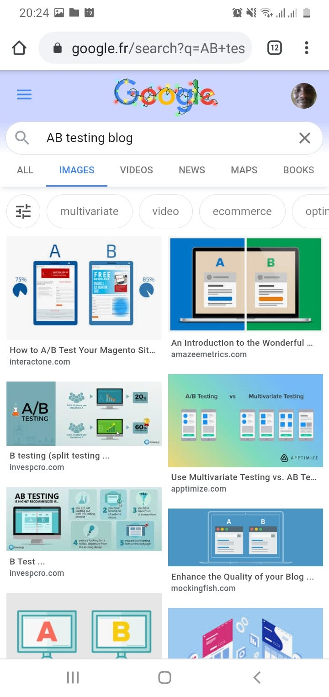

Dec 19, 2020
·
Scrolling VS button in mobile blog content
You better have to ask a visitors behavior specialist to know if it is better to implement a read more button that extend you content on the smartphone screen of youy visitor or just let them scroll or just do the experiment your self by using buttonVSscroll this smart AB testing tool that will help you know without a visitor behavior specialist because it is it is built by them to emulate them.
Give it a try
